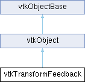

|
Etrek
|
|
Etrek
|
Manages a TransformFeedback buffer. More...
#include <vtkTransformFeedback.h>

Classes | |
| struct | VaryingMetaData |
Public Types | |
| enum | VaryingRole { Vertex_ClipCoordinate_F , Color_RGBA_F , Normal_F , Next_Buffer } |
Public Member Functions | |
| vtkTypeMacro (vtkTransformFeedback, vtkObject) | |
| void | PrintSelf (ostream &os, vtkIndent indent) override |
| void | ClearVaryings () |
| void | AddVarying (VaryingRole role, const std::string &var) |
| const std::vector< VaryingMetaData > & | GetVaryings () const |
| size_t | GetBytesPerVertex () const |
| size_t | GetBufferSize () const |
| void | BindVaryings (vtkShaderProgram *prog) |
| vtkOpenGLBufferObject * | GetBuffer (int index) |
| int | GetBufferHandle (int index=0) |
| void | Allocate (int nbBuffers, size_t size, unsigned int hint) |
| void | BindBuffer (bool allocateOneBuffer=true) |
| void | ReadBuffer (int index=0) |
| void | ReleaseGraphicsResources () |
| void | ReleaseBufferData (bool freeBuffer=true) |
| vtkSetMacro (NumberOfVertices, size_t) | |
| void | SetNumberOfVertices (int drawMode, size_t inputVerts) |
| vtkGetMacro (NumberOfVertices, size_t) | |
| vtkSetMacro (PrimitiveMode, int) | |
| vtkGetMacro (PrimitiveMode, int) | |
| vtkGetMacro (BufferData, void *) | |
| Public Member Functions inherited from vtkObject | |
| vtkBaseTypeMacro (vtkObject, vtkObjectBase) | |
| virtual void | DebugOn () |
| virtual void | DebugOff () |
| bool | GetDebug () |
| void | SetDebug (bool debugFlag) |
| virtual void | Modified () |
| virtual vtkMTimeType | GetMTime () |
| void | RemoveObserver (unsigned long tag) |
| void | RemoveObservers (unsigned long event) |
| void | RemoveObservers (const char *event) |
| void | RemoveAllObservers () |
| vtkTypeBool | HasObserver (unsigned long event) |
| vtkTypeBool | HasObserver (const char *event) |
| vtkTypeBool | InvokeEvent (unsigned long event) |
| vtkTypeBool | InvokeEvent (const char *event) |
| std::string | GetObjectDescription () const override |
| unsigned long | AddObserver (unsigned long event, vtkCommand *, float priority=0.0f) |
| unsigned long | AddObserver (const char *event, vtkCommand *, float priority=0.0f) |
| vtkCommand * | GetCommand (unsigned long tag) |
| void | RemoveObserver (vtkCommand *) |
| void | RemoveObservers (unsigned long event, vtkCommand *) |
| void | RemoveObservers (const char *event, vtkCommand *) |
| vtkTypeBool | HasObserver (unsigned long event, vtkCommand *) |
| vtkTypeBool | HasObserver (const char *event, vtkCommand *) |
| template<class U, class T> | |
| unsigned long | AddObserver (unsigned long event, U observer, void(T::*callback)(), float priority=0.0f) |
| template<class U, class T> | |
| unsigned long | AddObserver (unsigned long event, U observer, void(T::*callback)(vtkObject *, unsigned long, void *), float priority=0.0f) |
| template<class U, class T> | |
| unsigned long | AddObserver (unsigned long event, U observer, bool(T::*callback)(vtkObject *, unsigned long, void *), float priority=0.0f) |
| vtkTypeBool | InvokeEvent (unsigned long event, void *callData) |
| vtkTypeBool | InvokeEvent (const char *event, void *callData) |
| virtual void | SetObjectName (const std::string &objectName) |
| virtual std::string | GetObjectName () const |
| Public Member Functions inherited from vtkObjectBase | |
| const char * | GetClassName () const |
| virtual vtkTypeBool | IsA (const char *name) |
| virtual vtkIdType | GetNumberOfGenerationsFromBase (const char *name) |
| virtual void | Delete () |
| virtual void | FastDelete () |
| void | InitializeObjectBase () |
| void | Print (ostream &os) |
| void | Register (vtkObjectBase *o) |
| virtual void | UnRegister (vtkObjectBase *o) |
| int | GetReferenceCount () |
| void | SetReferenceCount (int) |
| bool | GetIsInMemkind () const |
| virtual void | PrintHeader (ostream &os, vtkIndent indent) |
| virtual void | PrintTrailer (ostream &os, vtkIndent indent) |
| virtual bool | UsesGarbageCollector () const |
Static Public Member Functions | |
| static vtkTransformFeedback * | New () |
| static size_t | GetBytesPerVertex (VaryingRole role) |
| Static Public Member Functions inherited from vtkObject | |
| static vtkObject * | New () |
| static void | BreakOnError () |
| static void | SetGlobalWarningDisplay (vtkTypeBool val) |
| static void | GlobalWarningDisplayOn () |
| static void | GlobalWarningDisplayOff () |
| static vtkTypeBool | GetGlobalWarningDisplay () |
| Static Public Member Functions inherited from vtkObjectBase | |
| static vtkTypeBool | IsTypeOf (const char *name) |
| static vtkIdType | GetNumberOfGenerationsFromBaseType (const char *name) |
| static vtkObjectBase * | New () |
| static void | SetMemkindDirectory (const char *directoryname) |
| static bool | GetUsingMemkind () |
Additional Inherited Members | |
| Protected Member Functions inherited from vtkObject | |
| void | RegisterInternal (vtkObjectBase *, vtkTypeBool check) override |
| void | UnRegisterInternal (vtkObjectBase *, vtkTypeBool check) override |
| void | InternalGrabFocus (vtkCommand *mouseEvents, vtkCommand *keypressEvents=nullptr) |
| void | InternalReleaseFocus () |
| Protected Member Functions inherited from vtkObjectBase | |
| virtual void | ReportReferences (vtkGarbageCollector *) |
| vtkObjectBase (const vtkObjectBase &) | |
| void | operator= (const vtkObjectBase &) |
| Static Protected Member Functions inherited from vtkObjectBase | |
| static vtkMallocingFunction | GetCurrentMallocFunction () |
| static vtkReallocingFunction | GetCurrentReallocFunction () |
| static vtkFreeingFunction | GetCurrentFreeFunction () |
| static vtkFreeingFunction | GetAlternateFreeFunction () |
| Protected Attributes inherited from vtkObject | |
| bool | Debug |
| vtkTimeStamp | MTime |
| vtkSubjectHelper * | SubjectHelper |
| std::string | ObjectName |
| Protected Attributes inherited from vtkObjectBase | |
| std::atomic< int32_t > | ReferenceCount |
| vtkWeakPointerBase ** | WeakPointers |
Manages a TransformFeedback buffer.
OpenGL's TransformFeedback allows varying attributes from a vertex/geometry shader to be captured into a buffer for later processing. This is used in VTK to capture vertex information during GL2PS export when using the OpenGL2 backend as a replacement for the deprecated OpenGL feedback buffer.
The role a captured varying fills. Useful for parsing later.
| void vtkTransformFeedback::AddVarying | ( | VaryingRole | role, |
| const std::string & | var ) |
Capture the varying 'var' with the indicated role.
| void vtkTransformFeedback::Allocate | ( | int | nbBuffers, |
| size_t | size, | ||
| unsigned int | hint ) |
Generates and allocates the transform feedback buffers. Must be called before BindBuffer. This releases old buffers. nbBuffers is the number of buffers to allocate. size if the size in byte to allocate per buffer. hint is the type of buffer (for example, GL_DYNAMIC_COPY)
| void vtkTransformFeedback::BindBuffer | ( | bool | allocateOneBuffer = true | ) |
Binds the feedback buffer, then call glBeginTransformFeedback with the specified PrimitiveMode. Must be called after BindVaryings and before any relevant glDraw commands. If allocateOneBuffer is true, allocates 1 buffer (used for retro compatibility).
| void vtkTransformFeedback::BindVaryings | ( | vtkShaderProgram * | prog | ) |
GL_SEPARATE_ATTRIBS is not supported yet. The bufferMode argument to glTransformFeedbackVaryings. Must be GL_INTERLEAVED_ATTRIBS or GL_SEPARATE_ATTRIBS. Default is interleaved. Must be set prior to calling BindVaryings. vtkSetMacro(BufferMode, int); vtkGetMacro(BufferMode, int); Call glTransformFeedbackVaryings(). Must be called after the shaders are attached to prog, but before the program is linked.
| void vtkTransformFeedback::ClearVaryings | ( | ) |
Clear the list of varying attributes to capture.
| vtkOpenGLBufferObject * vtkTransformFeedback::GetBuffer | ( | int | index | ) |
Get the transform buffer object. Only valid after calling BindBuffer.
| int vtkTransformFeedback::GetBufferHandle | ( | int | index = 0 | ) |
Get the transform buffer object handle. Only valid after calling BindBuffer.
| size_t vtkTransformFeedback::GetBufferSize | ( | ) | const |
The size (in bytes) of the capture buffer. Available after adding all Varyings and setting NumberOfVertices.
| size_t vtkTransformFeedback::GetBytesPerVertex | ( | ) | const |
Returns the number of bytes per vertexs, accounting for all roles.
|
inlinestatic |
Returns the number of data elements each vertex requires for a given role.
|
inline |
Get the list of captured varyings,
|
overridevirtual |
| void vtkTransformFeedback::ReadBuffer | ( | int | index = 0 | ) |
Calls glEndTransformFeedback(), flushes the OpenGL command stream, and reads the transform feedback buffer into BufferData. Must be called after any relevant glDraw commands. If index is positive, data of specified buffer is copied to BufferData.
| void vtkTransformFeedback::ReleaseBufferData | ( | bool | freeBuffer = true | ) |
Release the memory used by the buffer data. If freeBuffer == true (default), the data is deleted. If false, the caller is responsible for deleting the BufferData with delete[].
| void vtkTransformFeedback::ReleaseGraphicsResources | ( | ) |
Release any graphics resources used by this object.
| vtkTransformFeedback::vtkGetMacro | ( | BufferData | , |
| void * | ) |
Get the transform buffer data as a void pointer. Only valid after calling ReadBuffer.
| vtkTransformFeedback::vtkSetMacro | ( | NumberOfVertices | , |
| size_t | ) |
The number of vertices expected to be captured. If the drawMode setter is used, PrimitiveMode will also be set appropriately. For the single argument version set function, set the exact number of vertices expected to be emitted, accounting for primitive expansion (e.g. triangle strips -> triangle strips). The two argument setter is for convenience. Given the number of vertices used as input to a draw command and the draw mode, it will calculate the total number of vertices.
| vtkTransformFeedback::vtkSetMacro | ( | PrimitiveMode | , |
| int | ) |
The type of primitive to capture. Must be one of GL_POINTS, GL_LINES, or GL_TRIANGLES. Default is GL_POINTS. Must be set prior to calling BindBuffer.